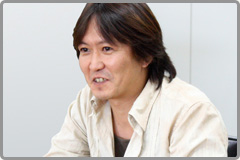
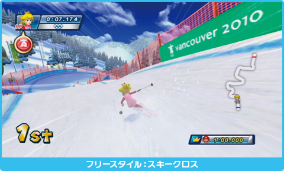
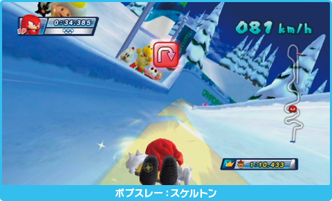
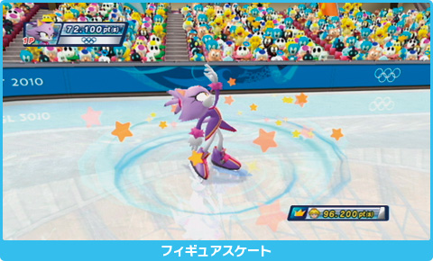

――
Wii版の特徴をお聞かせください。

飯塚：
マリオとソニックとオリンピックという３つの大きなコラボレーションによって誕生したソフトなので、やはり年齢・性別・国籍を問わず、本当にみんなが遊べるものにしたいというのが最初にありました。１人で遊ぶ方もいらっしゃれば、友だちと対戦したいという方、家族みんなで楽しみたいという方と、世界中にはいろんなタイプのユーザーさんがいらっしゃると思うんです。そんなすべての皆さんに最高のオリンピックのゲームをお届けしたいというのがベースになっています。
――
競技別に遊べるだけでなく、さまざまなモードが用意されていますが。
飯塚：
まず「フェスティバルモード」は17日間オリンピックの主役になったかのように体験して遊べるモードで、１人でもじっくり楽しめますし、友だちや家族４人みんなで協力して優勝を目指すという遊び方もできます。私も子供が２人いるんですが、スポーツゲームで対戦となると必ずどちらかが負けるので、ゲームが終わる頃にはどちらかが泣いてるんです（笑）。そこで、先ほどカーリングの例でもお話しましたが、家族で健闘をたたえ合うことができるような形になっています。また「バラエティモード」という、友だちや家族で多少ゲームスキルに差があっても対戦を楽しめるようにしたパーティゲーム風のモードもあります。
――
Wiiリモコンなどを使った操作方法も独特なものが多いですね。
飯塚：
キャラクターを操作していると言うよりは、自分がマリオやソニックになったようなイメージで遊べることを重視しました。例えばスキーですと、実際にストックを持っているようにリモコンとヌンチャクを構えて操作します。また、スピードスケートの場合はゲームの中のキャラクターと同じように腕を振る動きを合わせるとスピードが上がったりします。キャラクターと自分が一体となって体感できるわけです。

野中：
Wiiリモコンの微妙な振動の使い方とか、本当に雪の上を滑っているような感じになっていますよね。
飯塚：
さらに、今回はスキーやボブスレーなど選手が体重移動によって競技を行うスポーツがいくつかありますので、実際の選手の動きを体感するのにはまさにうってつけだということで、競技によってはバランスWiiボードでの操作にも対応しています。
野中：
ボブスレーは胸の前にWiiリモコンを持って体全体を傾けて操作するのですが、どういう操作にするかというセガさんとのミーティングの中で、実際に４人でイスを縦に並べてプレイしてみたということがあります。そこで本当に「楽しい」という声が上がりまして、傍から見て楽しそうに感じられたのかその場でセガさんにムービーで撮られたりしたんですが、セガさんのさまざまなゲーム的な工夫もあって、体感できてかつみんなで遊べる面白いものになったと思っています。
渡辺：
バランスWiiボードだとボブスレーは１人で座って遊ぶんですが、会社で夜の10時くらいに野中が席にいないなと思ったら、物陰でバランスWiiボードを床に置いて、暗い社内で１人体育座りしてプレイしていたのが印象的でした（笑）。

野中：
言い返しますと、渡辺は頭にWiiリモコンを乗せてフィギュアスケートをプレイしていましたね。本当は手で持ってプレイするところをフィギュアスケートの選手になりきって回転したりして（笑）。まあこの操作はオススメできませんけど。実際の操作方法で遊んだ方が楽しいですね。やっぱり。
飯塚：
スケルトンという競技では、バランスWiiボードの上に腹ばいになると、実際にソリで滑るのとまったく同じ姿勢と操作で遊べます。ただし、首を相当上げないとテレビが見づらいので、推奨の操作ではありませんが（笑）。
――
遊んでいる姿自体が絵になるというか、面白いものが多い印象があります。
野中：
北京の時は男の子的な競技が多かったのですが、今回はフィギュアスケートのように女性にも人気がある競技が入っているというのも大きな違いですね。
佐藤浩：
フィギュアスケートはゲームになっているかという理屈だけじゃなくて、操作と画面から得られる反応みたいな、直感的な部分が良いですよね。

――
モーグルなどもそうですけど、冬季競技では、単にタイムや技術を争うのではない要素も特徴といいますか……。
大橋：
「芸術点」のことですよね。
飯塚：
スキージャンプのバランスやテレマークなどもそうですね。実際の競技同様、それらもポイントとして加算するようにしています。
――
今回もWi-Fiランキングがあるようですが、それ以外にWi-Fiを使った試みなどは？
飯塚：
屋外の競技が多いということもあり、実際のバンクーバーの天気や、自分が住んでいる場所の天気を反映できたら面白いんじゃないかということで、『お天気チャンネル』の情報と連動するようにしています。例えば家の外で雪が降っていたら、ゲーム中も雪が降っていたり、スキージャンプのラージヒルの風向きや風速なども、その日の天気が影響するようになっています。もちろん、天候をランダムにしたりいつでも晴れにしたりということも可能です。